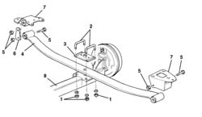
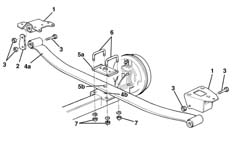

4420D20 REAR SUSPENSION AXLE -REPLACE- INCLUDES R+R, CHECK, PARTS TRANSFER AND BLEEDING
- Path
- Procedures > 44 SUSPENSION AND WHEELS > 4420 REAR SUSPENSION > 4420D REAR SUSPENSION AXLE/CROSSBEAM > 4420D20 REAR SUSPENSION AXLE -REPLACE- INCLUDES R+R, CHECK, PARTS TRANSFER AND BLEEDING
- Kind
- repair procedure (removal / refitting; the operation number is the code)
- Applies to
- all engines; all production periods
- Interactive page
- https://sloeber94.github.io/elrnDB-fDct/en/#/244001196
Applies to: all engines; all production periods
 Removing
Removing
 Refitting
Refitting
Applies to: all engines; all production periods
Applies to: all engines; all production periods
Refitting
Removing
Applies to: all engines; all production periods